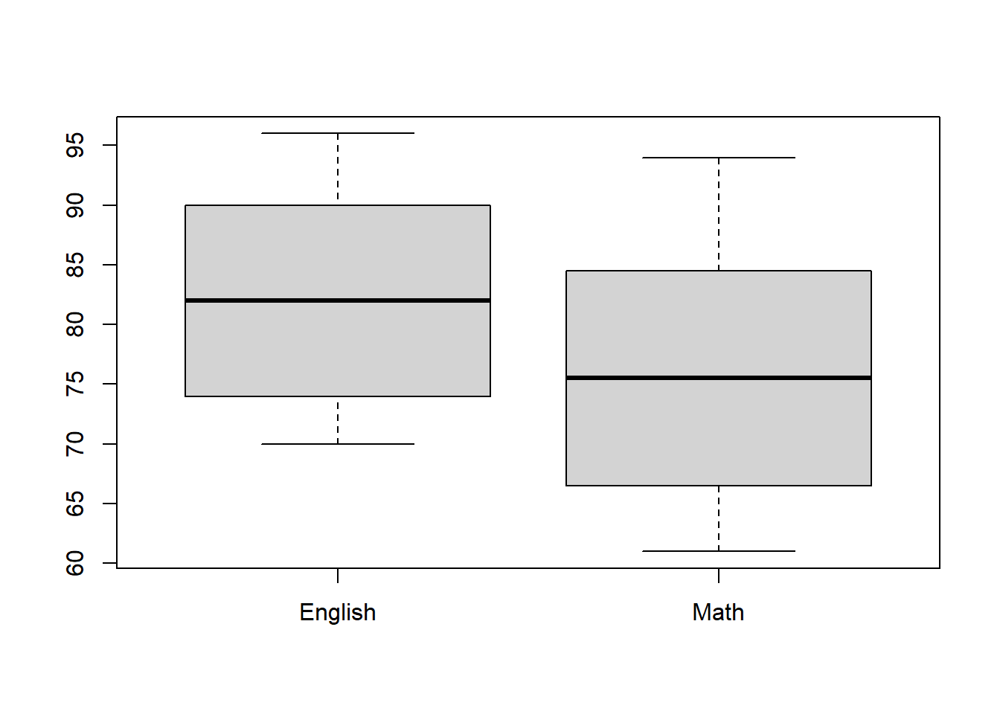

Chapter 5 統計的検定
5.3 統計的検定（statistical test）
母数についての推定（例「日本人の男子の平均身長は170 cmだ」）が合っているかを、統計学的に検定する
- 使用する標本は、母集団から無作為抽出していることを前提にしている = 標本は母集団を代表している
大別して2種類ある
- パラメトリック検定： 母数（パラメータ）に特定の確率分布の仮定を設ける検定（例 t 検定、分散分析）
- 注：確率分布の形状を決める値（正規分布の平均と標準偏差など）もパラメータと呼ぶ。本講義ではパラメータは母数ではなく、確率分布を規定する値を指す。
- ノンパラメトリック検定：母集団に特定の確率分布を仮定しない検定（例 カイ二乗検定）
- パラメトリック検定： 母数（パラメータ）に特定の確率分布の仮定を設ける検定（例 t 検定、分散分析）
5.3.1 統計的検定の論理
母集団からサンプリングした標本から、母数についての推定が合っているかを議論できない。しかし、確率的な範囲であれば、推定が間違っているかを確かめることができる。
- 標本から計算した95%信頼区間が160 cmから167cmだった場合、母数は170cmよりも小さい（推定は誤り）
- 標本から計算した95%信頼区間が167 cmから175cmだった場合、推定が合っているか誤りなのか分からない（信頼区間が170 cmを含んでいるから）
推測統計学における統計的検定の論理では、「母数についての等号（ = ）の仮説」が偽であることは言えるが、正しいとは言えない。
「母数の等号についての仮説」を帰無仮説（null hypothesis）と呼ぶ
帰無仮説は以下のように表す（Hはhypothesisの頭文字）\[H_0: u = 170\]
統計的検定では、帰無仮説が偽であるかを検定する。
背理法に似た方法であり、証明したい主張の否定の仮説を立て、得られた結果から主張できる結論が「矛盾」であることを示すことで、主張が正しいことを証明する。
- 例：「世界には白いカラスがいる」と主張したい
- 「全てのカラスは黒い」という仮説を立てる（帰無仮説）
- 1羽でも白いカラスが見つかれば、帰無仮説は偽であり、「世界には白いカラスがいる」と主張できる。
- 仮説が偽と主張する（否定する）方が簡単
対立仮説：帰無仮説の否定
\[H_1: u ≠ 170\]
帰無仮説が否定されれば、対立仮説が真となる
帰無仮説が偽であると判断できない場合、帰無仮説は保留になる（= 分からない）。
- 帰無仮説は真であるということはできない。
5.3.2 統計検定の具体的な考え方
帰無仮説が正しいと仮定する。標本から計算された統計量の実現値が、標本分布から考えて十分低い確率でしか生じないような値であれば、帰無仮説が偽であると判断する
- 注意点として、選んだ確率モデル（確率分布）が妥当でない場合、検定の結果も妥当ではなくなる。以下の例では、母集団からの標本抽出が正規分布で近似できるという仮定のもと行う。
例： 2025年度にT先生のクラス（40人）で実施された英語テストの平均点は60点であった。昨年度の平均点は55点であり、2025年度の平均点は、昨年度の平均点に比べ十分に高い得点であるかを検定する。
- 帰無仮説 u = 55の下で、得点が平均パラメータ u = 50の正規分布に従うと仮定。
- クラス平均は60点、標準偏差は3であると分かった。
- 母分散が分からない場合、t 統計量を用いる。
\[t = \frac{\overline{x} - \mu_0}{\frac{u}{\sqrt{n}}}\]
- 上記の値を代入し、
\[t = \frac{\overline{60} - 55}{\frac{3}{\sqrt{40}}}\]
- 計算すると、 t = 10.54となる。このような検定のための統計量を検定統計量という。
## [1] 10.54093- 自由度が39（40-1）で95%の範囲は0±2.02であるため、得られたt値がこの絶対値より大きいと棄却域に（青く塗られた箇所）に入ることになる。帰無仮説が真であると仮定したときの検定統計量の標本分布のことを帰無分布（null distribution）という。
- 棄却域が占める割合を有意水準（significance level）と言い、αと表記する。慣例的に、両側合わせて0.05が用いられる。
## [1] 2.022691得られたt値は2.02よりも大きく、棄却域に入る。従って、帰無仮説が真であると考えると、非常に小さい確率でしか起きない結果が得られたという帰無仮説が真であるという仮定と矛盾した結果となっている。この場合、統計的に有意であると表現する。
- つまり、「2025年度の平均点60点は、昨年度よりも統計的に高い得点である。」と主張できる。
2025年度の得点が昨年度よりも統計的有意に高いことは、全員の得点が昨年度よりも高いことを必ずしも意味しないということに注意。比較しているのはあくまでも平均点。以下のどちらのデータでも統計的有意差が得られる。
## Min. 1st Qu. Median Mean 3rd Qu. Max.
## 55.00 58.33 60.27 60.16 62.08 65.36## Min. 1st Qu. Median Mean 3rd Qu. Max.
## 52.88 54.14 57.34 58.11 61.45 66.51- 黒い点線は平均値55点

5.4 統計的検定の手順
- 確率モデルの設定
母数について仮説を立てる。この母数は確率モデル（確率分布）のパラメータと対応しているという仮定が必要。
- 先行研究の結果、得られたデータの分布などから適切な確率モデルを選ぶ必要がある
- 帰無仮説の設定
例えば、映画を見ると英単語の学習に効果的だということを調べる場合、映画を見る群と、映画を見ない群を用意する。二つの群の平均値の差が0でなければ、映画を見ることに何らかな効果があると主張できる。この場合、以下のような帰無仮説を立てる。
- 帰無仮説：二つの群の平均値差は0
検定統計量の設定
有意水準（ α ）の設定
慣例的に言語研究の分野では5%が用いられる。
帰無仮説を偽とする場合でも、最大5%程度はそれが間違えている可能性を表す。
- 分析の前に決定し、結果を見て有意水準を大きくするのは、研究倫理に反するとみられる可能性が大いにある。
- 分析の前に0.05よりも大きくすることはよい。
- 分析の前に決定し、結果を見て有意水準を大きくするのは、研究倫理に反するとみられる可能性が大いにある。
- 検定統計量の実現値の計算
5.5 統計的検定で必要な知識
5.5.1 p 値
検定統計量を変換し、有意水準と比較しやすくしたもの
- 検定統計量の実現値が大きいほどp値は小さくなる
上記の手順では、検定統計量の実現値と棄却域の範囲を確認して、帰無仮説が棄却されるかを判断していた。しかし、コンピュータソフトウェアでは、p値が表示され、この値が事前に設定した有意水準よりも大きいかもしくは小さいかを確認して棄却の有無を判断する。
##
## One Sample t-test
##
## data: df$Data1
## t = 12.351, df = 39, p-value = 4.691e-15
## alternative hypothesis: true mean is not equal to 55
## 95 percent confidence interval:
## 59.31461 61.00448
## sample estimates:
## mean of x
## 60.15955##
## One Sample t-test
##
## data: df$Data2
## t = 4.4932, df = 39, p-value = 6.106e-05
## alternative hypothesis: true mean is not equal to 55
## 95 percent confidence interval:
## 56.70752 59.50353
## sample estimates:
## mean of x
## 58.10553e-やe+は指数的記法です。6.106e-05であれば、6.106 × 10^(-5)なので、0.を合わせて0が5つ6の前につきます。逆に6.106e+05であれば6.106 × 10^5です。Rではoptions関数で通常の値に戻して表示できます。
##
## One Sample t-test
##
## data: df$Data2
## t = 4.4932, df = 39, p-value = 0.00006106
## alternative hypothesis: true mean is not equal to 55
## 95 percent confidence interval:
## 56.70752 59.50353
## sample estimates:
## mean of x
## 58.105535.5.2 統計的検定の誤りと検出力
第一種の誤り（type Ⅰ error）
帰無仮説が真なのに、誤って偽だと主張すること（本当は差がないのに差があると判断する）
有意水準 α の値と一致
- 統計的検定では、限界点として、100%正しいことは保証されない。有意水準が5%であれば、5%の誤った主張を許すことになる。
第二種の誤り（type Ⅱ error）
帰無仮説が偽なのに、それを偽であると言えない（保留）すること（本当は差があるのに差がないと判断する）
β で表す

検出力（power）
帰無仮説が偽であるとき、正しく帰無仮説を棄却できる確率
1 - β で表す
統計的検定では、α を維持しながら検出力を高くするのが望ましい
大きい効果ほど、大きい標本サイズほど、統計的有意を検出しやすくなる
有意水準を小さくすると、第二種の誤りが大きくなる = α を小さくすると、β は大きくなる
帰無分布と真の母数の標本分布が離れるため、検出力は、帰無仮説と母平均の差が大きいほど、標本サイズが大きいほど大きくなる。
サンプルサイズ・検定力・有意水準に加え、効果量（effect size）も連動している。効果量は後の講義で詳しく扱うが、簡単に説明すると、関心を持つ事柄の大きさである。4つのうち、3つが分かれば、自動的に残りの1つの値を特定できる。これを利用したのが検定力分析（power analysis）である。これを実験前に使うことで、どれくらいの標本を収集すべきかを検討できる。近年の研究では、参加者の数を検定力分析で決めているかを重視する（査読で！）動きがある。
5.5.3 有意性検定（≒ 統計的検定）の問題点
有意確率（ p < 0.05）だけに結果を頼るのはよくない
無作為抽出を前提としていても、必ず得られた結果に誤差が含まれている
標本サイズに大きく左右される
統計的検定における誤差と問題点の対処法
- できるだけ母集団を代表するサンプルを得る
- 信頼区間を報告する
- 検定力分析で標本サイズを事前に決める
- 効果量を報告する
言語研究における効果量は、Neyman-Pearson流の理論に基づくことがほとんど。
5.5.4 頻度論的統計学とベイズ統計学
ここまで説明してきた話 + この講義のほとんどの説明における統計学は、頻度論的統計学（frequentist statistics）と呼ばれる枠組み。
検定において用いる数学的手法が異なる。頻度 vs. ベイズのような「主義の違いによる対立構造」は避けた方がよい
母集団からサンプリングする（標本を抽出する）のは繰り返すことができる試行において起こる事象の相対頻度（frequency）をもとに行われる。例えば、サイコロを14回降って、1の目が3回出た場合、1が出る確率は になる。これを頻度論的確率と呼び、人間の主観や信念に依存しない客観的な確率である。
確率とは無限回試行を行ったときの割合
仮説の評価を p 値を用いて行う
- 「帰無仮説のもとでデータが得られる確率」を計算する
データを追加して再度分析する際、、適切な方法を用いないと、計算されたp 値と有意水準が当初の値から変わってしまう（検定力分析が重要な理由）
ベイズ統計学では、主観確率（「明日は30%で晴れるだろう」）と客観確率（「10日3日晴れたから明日は晴れるだろう」）の両方を検定に使用する。
ベイズ統計学では p 値は使わない
ベイズ統計では、データを追加して再度分析することはOK（データの二度漬けをしない限り）
頻度論的統計学、ベイズ統計学どちらにおいても、「無作為抽出により標本が母集団を代表している」「母集団からのサンプリングを近似していること」という前提が重要
- ベイズ統計学の方が道具的に使いやすいと考えることもできる
フローチャート的な統計分析は推奨されません。分析の前に、分析するデータの母集団がどのような形状なのか、この分析方が正しいのかなど十分検討することが重要です。
5.6 ハンズオンセッション
5.6.3 t検定を使用する前提
- データの種類：間隔尺度または比例尺度
- サンプリング：母集団から無作為抽出され、母集団を十分代表していること
- 正規性：標本平均の分布が正規分布に従うこと。少々外れている場合は正規性に対して頑健であるためOK。大きく外れている場合はノンパラメトリック版のt検定を検討することも考えれるが、ウェルチのt検定を用いることをできるだけ優先する方がいい場合が多い。ノンパラメトリック検定にも使用する前提がある。
- （対応なしの場合のみ）等分散性：比較する2群のデータの分散が等しいこと（= 母分散が等しい集団からデータがサンプリングされていること）。t検定は母分散の等質性に関しても頑健であるため、グループのサンプルサイズが等しい場合、分析結果が歪むことはほとんどない。
- ウェルチのt検定を使うのがよい = t 検定の場合基本ウェルチのt 検定を使う
- （対応なしの場合のみ）観測値の独立性：データがお互いに影響し合い相関が高い場合、第一種の過誤が起こりやすくなる
重要正規性の検定や等分散性の検定を行うことを推奨されることがあるが、このような事前テストは第一種&第二種の過誤の確率を高めることが報告されている（e.g., Rasch et al. [2011]）。そのため、そのような検定を行わず、ウェルチのt 検定を行う方がよい。
5.6.4 t 値の算出
標本平均の標本誤差：差がどれだけ偶然の誤差によって起きるかを推定
偶然起こる誤差おりどの程度大きいかを調べる検定
\[t\ =\ \frac{観測された標本平均の差}{標本平均の差の標準誤差}\]
5.6.4.1 対応なし t 検定（サンプルサイズが等しい）
\[ t = \frac{\bar{x}_1 - \bar{x}_2}{\sqrt{\frac{S_1^2}{n_1} + \frac{S_2^2}{n_2}}} \hspace{3pc} (df = n_1 + n_2 - 2) \]
5.6.5 Rでの実装
5.6.5.1 対応なし t 検定
- データの読み込み
## ID Class English
## 1 1 A 85
## 2 2 A 78
## 3 3 A 90
## 4 4 A 82
## 5 5 A 88
## 6 6 A 84## [1] 80##
## Descriptive statistics by group
## group: A
## vars n mean sd median trimmed mad min max range skew kurtosis se
## X1 1 40 83.03 4.3 83 83 5.93 76 90 14 0.01 -1.25 0.68
## ------------------------------------------------------------
## group: B
## vars n mean sd median trimmed mad min max range skew kurtosis se
## X1 1 40 60.48 5.73 60 60.44 7.41 50 70 20 0.05 -1.25 0.91##
## Welch Two Sample t-test
##
## data: English by Class
## t = 19.911, df = 72.353, p-value < 0.00000000000000022
## alternative hypothesis: true difference in means between group A and group B is not equal to 0
## 95 percent confidence interval:
## 20.2925 24.8075
## sample estimates:
## mean in group A mean in group B
## 83.025 60.475論文記載例
* 本来であれば、効果量も報告する必要があるが、今回は省略している。
異なる指導法を実施したクラス A とクラス B の英語テストの平均点は、83.03 (SD = 4.3)と 60.48 (SD = 5.73 でクラス A の平均の方が高かった。 t 検定を使って比較した結果、t(72.353) = 19.911, p < .001、 d = xxx [95%CI = xxx, xxx] で、クラスAのほうが統計的に有意に英語テストの成績が高いことがわかった。
- p 値は原則実数値報告である（ p = .046）。しかし、値が0.01よりも小さい場合は、p < .001のように報告する。
5.6.5.2 対応あり
- データの読み込み
## ID English Math
## 1 1 85 78
## 2 2 88 82
## 3 3 90 85
## 4 4 92 89
## 5 5 87 83
## 6 6 91 86## [1] 40
## vars n mean sd median trimmed mad min max range skew kurtosis se
## X1 1 40 82.22 8.65 82 82.16 11.86 70 96 26 0.04 -1.67 1.37## vars n mean sd median trimmed mad min max range skew kurtosis se
## X1 1 40 75.85 10.02 75.5 75.56 13.34 61 94 33 0.15 -1.47 1.59paired = Tを設定する
##
## Paired t-test
##
## data: dat_t_rep$English and dat_t_rep$Math
## t = 21.641, df = 39, p-value < 0.00000000000000022
## alternative hypothesis: true mean difference is not equal to 0
## 95 percent confidence interval:
## 5.779151 6.970849
## sample estimates:
## mean difference
## 6.375論文記載例
* 本来であれば、効果量も報告する必要があるが、今回は省略している。
- Aクラスの40名の学生を対象に、英語と数学のテストの得点を比較した。英語の平均点は、82.22 (SD = 8.65)と 75.85 (SD = 10.02)で英語の平均の方が高かった。対応ありの t 検定を使って比較した結果、t(39) = 21.641, p < .001、 d = xxx [95%CI = xxx, xxx] で、英語のほうが統計的に有意に得点が高いことがわかった。
5.7 次週までの課題
5.8 参考文献
- 心理学統計法 放送大学
- https://www.isc.meiji.ac.jp/~hirukawa/randomevent/test1.htm
- 中村 心理学・教育学研究のための効果量入門
- 平井 et al.
- 心理学統計の基礎
- https://www.note.kanekoshobo.co.jp/n/nf836d37b7f10#61a8e679-85a4-411c-96dd-5a1a37335572
- https://x.com/genkuroki/status/1227224899875295234
- https://norimune.net/3339
- https://statmodeling.stat.columbia.edu/2024/01/08/bayesians-are-frequentists-2/
- Rasch, D., Kubinger, K. D., & Moder, K. (2011). The two-sample t test: pre-testing its assumptions does not pay off. Statistical papers, 52, 219-231.